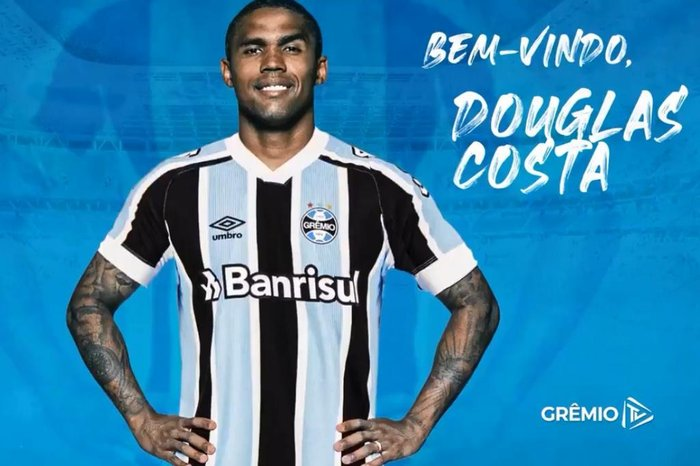
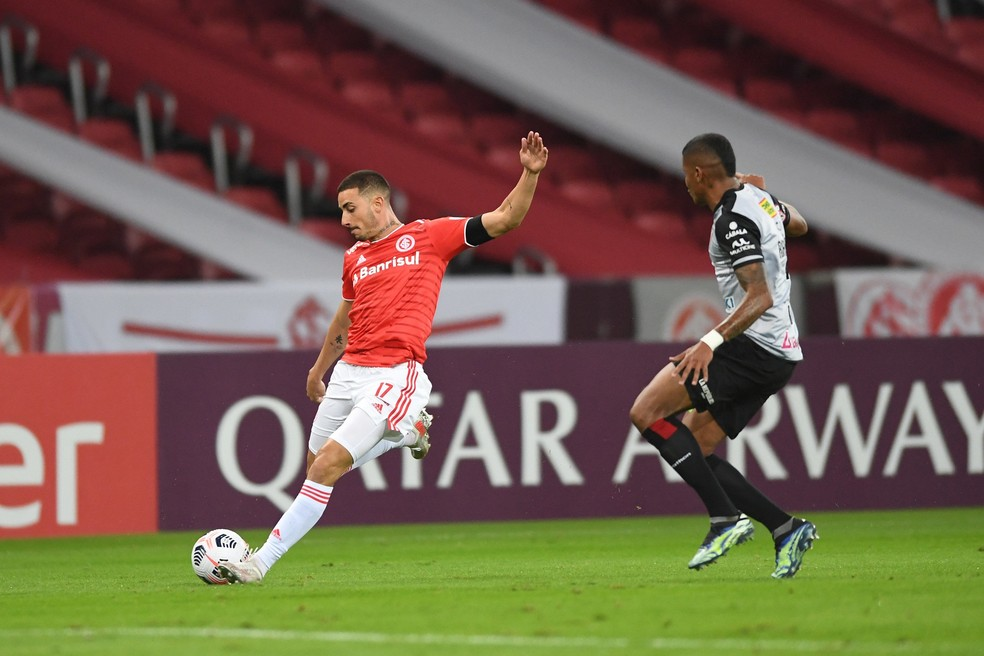
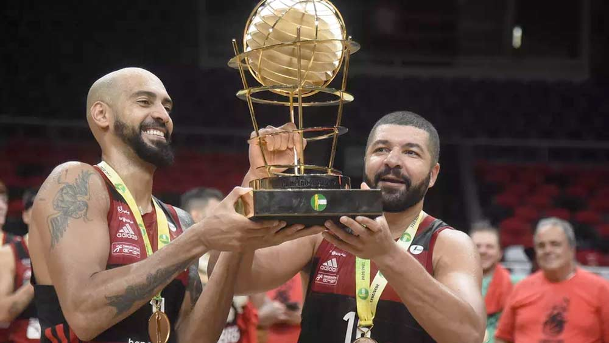
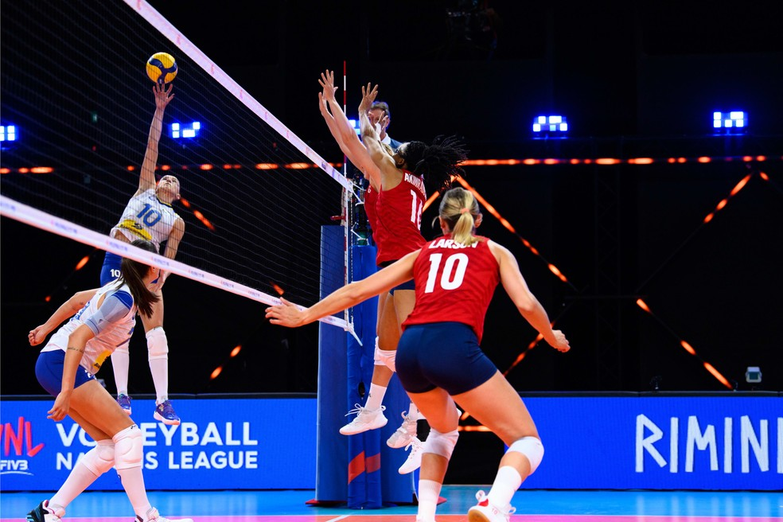

_____________________________________________________________________________________________________________________________________________________________________________________________________________________
betsul - O melhor do esporte
Ultimas Noticias do futebol gaúcho
Douglas Costa de volta ao Grêmio depois de 11 anos.

Após 11 anos, Douglas Costa está oficialmente de volta ao Grêmio. O atacante foi anunciado pelo clube e já foi registrado no Boletim Informativo Diário da CBF. Ele chega por empréstimo de um ano, mas com a possibilidade de renovação automática ao término do contrato até o final de 2023, caso a Juventus não exerça, até o fim deste ano, a opção de renovar até junho de 2023.
Douglas Costa conseguiu a resolver as questões burocráticas com a Juventus e inclusive teve os anúncios das saídas por parte da equipe italiana e do Bayern de Munique, onde estava emprestado, ao longo do dia.
Douglas Costa ainda não foi anunciado oficialmente, mas já fala como jogador do Grêmio.
O material foi produzido para o próprio atacante utilizar em suas redes sociais. O vídeo não foi divulgado pelo atleta e nem pela produtora de conteúdo, mas vazou também nas redes. Douglas diz que é o momento certo de voltar para casa e cita conversas com Pedro Geromel durante a Copa de 2018, na Rússia.
— Depois de 12 anos fora, acredito que é o momento justo de voltar para casa. Porque essa conversa se iniciou muito tempo atrás, estava na Copa da Rússia e ele (Geromel) brincando, "e aí, vai voltar?" Falei daqui dois ou três anos me convoca que eu estou lá. E passou rápido, graças a Deus o Geromel teve impacto importante nisso, um cara que sempre me quis no clube, no Grêmio, apesar de todos os funcionários e atletas também quererem minha chegada. Um retorno importante, venho com bagagem importante depois de anos fora e acredito que vamos colher muitos frutos agora. Realmente sempre foi o time do meu coração — destacou Douglas Costa.
Douglas Costa será emprestado ao Grêmio por um ano, até julho de 2022, e terá o contrato renovado automaticamente até o fim de 2023. Os últimos detalhes para a liberação do clube italiano foram acertados nesta semana, em reuniões com o estafe do jogador na Itália.
O Grêmio já tem um acerto com o jogador e também a liberação do clube italiano e deve anunciar a contratação em breve, tão logo resolva as últimas pendências burocráticas.
O atacante de 30 anos volta ao clube 11 anos depois de rumar à Europa. Em 2010, ele foi vendido ao Shakhtar Donetsk, da Ucrânia, por cerca € 6 milhões (R$ 14,9 milhões, à época), além de uma fatia em uma futura venda.
_____________________________________________________________________________________________________________________________________________________________________________________________________________________
Em empate, Inter passa em branco no Beira-Rio pela primeira vez na Libertadores

classificação às oitavas de final da Libertadores ocorreu e veio com o primeiro lugar no grupo. Porém, a campanha, a pior entre os líderes das chaves, ficou abaixo do esperado e o Inter passou em branco pela primeira vez como mandante na competição.
O 0 a 0 com o Always Ready fez o Inter não vencer o lanterna do Grupo B nos dois jogos disputados. E foi a primeira vez na atual edição da Libertadores que o time saiu sem marcar em uma partida no Beira-Rio.
— Temos nos preparado para encarar esse tipo de defesa. O primeiro gol é muito importante. Tivemos muitas chances claras. O resultado poderia ser diferente. Seguiremos trabalhando, temos grandes jogadores à frente, artilheiros. Que os resultados sejam construídos com naturalidade — minimizou Lomba.
A quarta-feira teve um gosto agridoce aos colorados. A equipe já entrou virtualmente classificada. Apesar da posse de bola (75%) e as finalizações (21), não conseguiu superar o goleiro Lampe.
Foi o segundo empate consecutivo do Inter, que vem da perda do título gaúcho para o maior rival. Nos últimos cinco jogos, venceu apenas o Olimpia, há uma semana. Antes, teve derrotas por 2 a 1 para o Deportivo Táchira e Grêmio, ambas de virada.
Os insucessos recentes incomodam parte da torcida. Além de cobranças nas redes sociais e protestos recentes, duas organizadas não expuseram suas bandeiras e faixas no Beira-Rio e evitaram que os cânticos fossem reproduzidos na última quarta.
A quinta será de folga no Beira-Rio, com reapresentação na tarde de sexta. No domingo, o Inter começa a caminhada em busca do tetracampeonato do Brasileirão diante do Sport.
_____________________________________________________________________________________________________________________________________________________________________________________________________________________
Ultimas noticias do basquete Brasileiro
Flamengo varre São Paulo na final e é heptacampeão do NBB

O Flamengo é campeão do Novo Basquete Brasil (NBB) pela sétima vez. Depois de vencer o São Paulo nos dois primeiros jogos da final, o Rubro-Negro tratou de varrer o rival com uma vitória por 93 a 85 nesta quinta no Maracanãzinho, encerrando a série melhor de cinco. Olivinha (18 pontos), Marquinhos (17), Hettsheimeir (15) e Yago (13) foram os maiores pontuadores da equipe do técnico Gustavo De Conti. Pelo lado do Tricolor, Lucas Mariano anotou 22 pontos, três a mais que Dawkins e quatro a mais que Georginho.
Com a conquista do hepta, o Flamengo consolida ainda mais a sua hegemonia no basquete brasileiro. Criado em 2008, o NBB teve apenas quatro campeões. O Brasília, com três títulos, é o segundo maior vencedor. As outras equipes que levantaram o caneco foram o Bauru e o Paulistano, ambos uma única vez.
O jogo começou equilibrado, com o Flamengo fazendo 5 a 2 e o São Paulo virando para 7 a 6. Aos quatro minutos, Hettsheimeir acertou bola de três, fazendo 12 a 9 para o Rubro-Negro. Na jogada seguinte, porém, Lucas Mariano devolveu na mesma moeda, igualando em 12 a 12. Aos seis, Yago pontuou, sofreu falta e converteu o lance livre, marcando 17 a 14. O São Paulo sentiu o golpe e passou a ser dominado. A 45 segundos do término, Léo Demétrio ampliou para 26 a 18. O Tricolor ainda descontou com Georginho, numa infiltração, encerrando o quarto com seis pontos de desvantagem: 26 a 20.
s primeiros pontos do segundo quarto foram marcados por Lucas Mariano. Mineiro respondeu para o Flamengo no lance seguinte. Aos três minutos, Léo Demétrio chutou para três pontos e marcou 31 a 22. O São Paulo não se entregou e foi buscar a reação. Aos quatro, Dawkins diminuiu para 31 a 30. O empate veio segundos depois, novamente com Dawkins, agora numa bola de três: 33 a 33.
Motivado, Dawkins foi para cima da defesa rubro-negra, aos cinco, ele sofreu falta no momento do arremesso. Como ele converteu apenas um dos dois lances livres, o placar foi a 34 a 33 para o Tricolor. O Flamengo só foi reagir nos minutos finais do quarto. Após cestas de Chuzito, Mineiro e Olivinha, o marcador foi a 42 a 36 para o Rubro-Negro. Aproveitando o bom momento, o time do técnico Gustavo De Conti administrou os instantes, conquistando a vitória parcial de 45 a 39.
O terceiro quarto começou movimentado, e, com três minutos jogados, o placar já era de 50 a 44 para a equipe carioca. Aos quatro, Olivinha acertou bola de três, fazendo 53 a 44. Segundos depois, foi a vez de Marquinhos chutar para três e deixar o Flamengo com 12 pontos de frente - 56 a 44. Aos seis, Yago arremessou livre e marcou 60 a 49. Mesmo com Lucas Mariano bem na partida, o São Paulo não teve forças para se aproximar do empate, encerrando o quarto com uma derrota parcial de 68 a 60.
Jogando o seu tudo ou nada no NBB 2021, o São Paulo iniciou o último quarto arrasador, e, aos dois minutos, Dawkins pontuou e sofreu falta, diminuindo para 70 a 67. O Flamengo só foi acordar quando Olivinha fez 72 a 67. Pouco depois, Marquinhos serviu Olivinha, que deixou o Rubro-Negro com 10 pontos de frente - 77 a 67. A cinco minutos do fim, Georginho acertou bola de três, diminuindo para 77 a 72. Só que Marquinhos e Olivinha trataram de segurar o ímpeto do Tricolor, levando o Flamengo à incontestável vitória por 93 a 85.
_____________________________________________________________________________________________________________________________________________________________________________________________________________________
Ultimas noticias do volei brasileiro
Brasil reage no terceiro set, mas perde para os Estados Unidos na Liga das Nações

Após duas boas vitórias, o Brasil enfrentou nesta quinta-feira o adversário mais difícil da semana 1 da Liga das Nações. Na verdade, o time dos Estados Unidos é o rival mais duro da competição disputada na bolha criada pela FIVB em Rimini, na Itália. Em um jogo com muitos erros no ataque, mas com um terceiro set aguerrido, a seleção brasileira caiu diante das americanas por 3 sets a 1 - com parciais de 25/17, 25/19, 23/25 e 25/22.
O começo do jogo deu indícios de que seria equilibrado, disputado ponto a ponto em todos os sets. Mas o Brasil cometeu muito erros, deixando a desejar no ataque. Somente na terceira parcial a seleção endureceu a partida. A maior pontuadora da seleção brasileira foi a ponteira Fê Garay com 18 pontos, seguida por Gabi com 15 pontos. Os Estados Unidos mostraram muita consistência em quadra, com Sarah Parsons incrível nas viradas de bola. Ela foi o destaque da partida com 25 pontos. Jordan Larson anotou 16 pontos.
O Brasil terminou a semana 1 da Liga da Nações com duas vitórias e uma derrota. Está com 6 pontos, na quinta posição. Invicto, o time dos Estados Unidos lidera o ranking com três vitórias e 9 pontos. O início da semana 2 será na próxima segunda-feira, dia 31 de maio. A seleção brasileira estreará nesta fase contra o Japão, às 10h (de Brasília), com transmissão ao vivo do SporTV2.
_____________________________________________________________________________________________________________________________________________________________________________________________________________________
Em breve mais atualizações